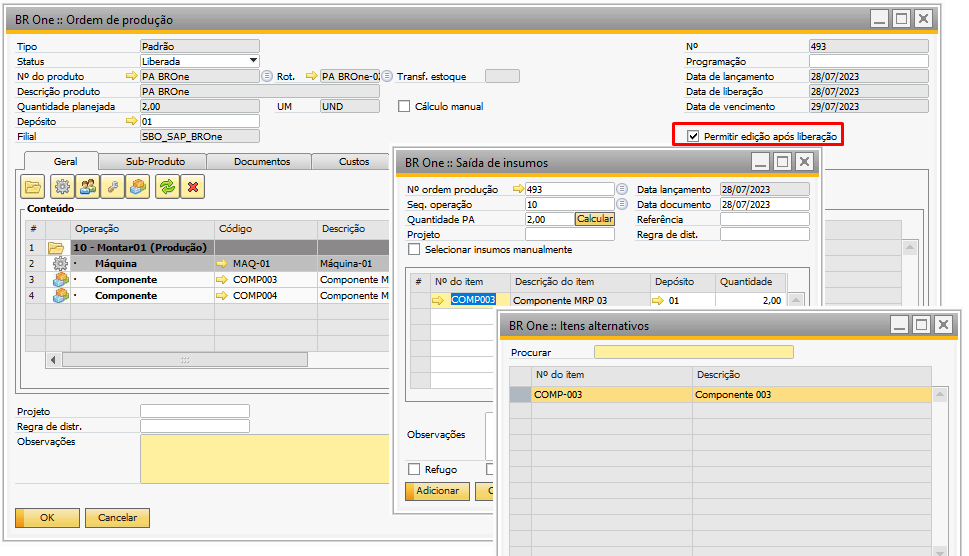

Saída de Insumos
Nesta tela é possível realizar a saída de insumos.
Para acessar essa tela pode utilizar as opções:
Através do menu Produção -> Saída de insumos;
Através do Terminal de Apontamentos;
Através do botão direito na Ordem de Produção liberada.

Para realizar a saída de insumo, basta informar o “Nº ordem produção” e a “Seq. Operação”, e ao preencher as linhas com os componentes dessa operação, a quantidade do(s)item(ns) será carregada.
O CFL (Choose From List) do campo “Nº ordem produção” será carregado da seguinte forma:
Quando o campo estiver vazio, apenas aparecerão as 100 primeiras OPs para seleção.
Quando o campo estiver com (*), aparecerão todas as OPs disponíveis para saída de insumos.
Quando houver algum filtro, aparecerão todas as OPs de acordo com o filtro informado.
OBS.: OPs que possuem a flag “Ignorar no fechamento de custos” marcada não serão carregadas no CFL.
Se a saída for referente a refugo, basta marcar a flag “Refugo”.
A coluna “Classificação refugo” aparecerá no grid, e os itens serão calculados de acordo com ela, ao clicar no botão “Calcular”.
Ao clicar no botão “Calcular”, a seguinte mensagem será exibida:
BR One :: As quantidades dos insumos serão recalculadas de acordo com a quantidade informada. Continuar?
Ao clicar em “Sim”, as quantidades dos itens serão recalculadas de acordo com a quantidade de PA.
Por exemplo, se a quantidade base do componente for 0,006 e no campo “Quantidade PA” for digitado 2, a mensagem acima será exibida, e se for clicado em “Sim”, a quantidade do item será recalculada com o valor 0,012.
(2 * 0,006 = 0,012).
Ao inserir uma nova linha no grid, a exibição dos itens na tela “BR One :: Saída de insumos” é influenciada também pelo parâmetro “Permitir selecionar itens com método de baixa por explosão” presente na tela “BR One :: Configurações de produção”.
Se o parâmetro mencionado estiver marcado, a flag “Exibir itens com método de baixa por explosão” ficará visível na tela de “BR One :: Saída de insumos”.
Nesse caso, os itens disponíveis para seleção serão tanto aqueles como “Baixa Manual” quanto os com “Baixa por explosão”.
Por outro lado, se o parâmetro “Permitir selecionar itens com método de baixa por explosão” estiver desmarcado, somente os itens com baixa Manual serão exibidos na tela, e a flag “Exibir itens com método de baixa por explosão” não estará disponível.
Caso o usuário tente adicionar uma saída sem informar uma OP, a seguinte mensagem será exibida:
BR One :: Informe uma ordem de produção.
Caso o usuário tente adicionar uma saída sem informar uma operação, a seguinte mensagem será exibida:
BR One :: Informe uma operação.
Caso o usuário tente adicionar uma saída com linhas faltando o número do item, a seguinte mensagem será exibida:
BR One :: Informe o número do item.
Caso o usuário tente adicionar uma saída com linhas faltando o depósito, a seguinte mensagem será exibida:
BR One :: Informe o depósito de destino.
Caso o usuário tente adicionar uma saída com linhas faltando a quantidade, a seguinte mensagem será exibida:

BR One :: A quantidade deve ser maior que zero.
Caso o usuário tente adicionar uma saída sem data, a seguinte mensagem será exibida:
BR One :: Informe uma data do documento.
É possível também que a ordem de produção tenha seu status alterado enquanto a tela de saída de insumos estiver aberta:

BR One :: Ordem de produção deve estar liberada para que seja possível realizar a saída de insumos.
Existe a possibilidade de realizar o apontamento para um item alternativo (previamente cadastrado na tela Estoque -> Administração de itens -> Itens alternativos).
Para isto, basta que a flag “Permitir edição após liberação” esteja marcada na OP que será feita a saída de insumos e que seja pressionado a sequência CTRL + TAB no código do item para o qual se deseja que seja carregada a lista de itens alternativos.
Se o usuário estiver tentando inserir um item que esteja cancelado na OP, a seguinte mensagem será exibida:

BR One :: Item selecionado na linha x está cancelado na OP. Selecionar itens alternativos pressionando CTRL + TAB no campo n° do item.
Para inserir um item alternativo, o item pode ou não estar cancelado. Basta criar uma saída de insumos para o item e, se desejar trocá-lo, pressione CTRL + TAB e o item atual poderá ser trocado por um alternativo a ele.
O item será carregado na tela Saída de insumos:
Se o usuário pressionar CTRL + TAB no item que deseja trocar, mas a flag “Permitir edição após liberação” na OP estiver desmarcada, a seguinte mensagem será exibida:

BR One :: Não é permitido selecionar itens alternativos pois a OP selecionada não permite edição após a liberação.
Há o campo Referência que pode ser usado para inserir uma informação de referência adicional para a saída de insumos:
Após a saída de insumos ser inserida, a referência informada será mostrada na tela Saída de mercadorias:
A flag “Selecionar insumos manualmente” virá marcada ou não, dependendo da configuração na tela ‘Configurações de produção’. Quando ele estiver marcado, após o usuário informar a sequência de operação, os insumos não serão carregados no grid, sendo necessário inserir uma nova linha e selecioná-los manualmente.
Se houver itens duplicados na OP, ao selecioná-lo, será aberta uma nova tela para ser escolhido o item. Ao selecionar os insumos manualmente, a quantidade carregada será a quantidade pendente.
Quando a flag estiver desmarcada, os insumos serão carregados normalmente.
A flag pode ser marcada ou desmarcada a qualquer momento. Esta tela possui configurações que podem alterar seu comportamento.